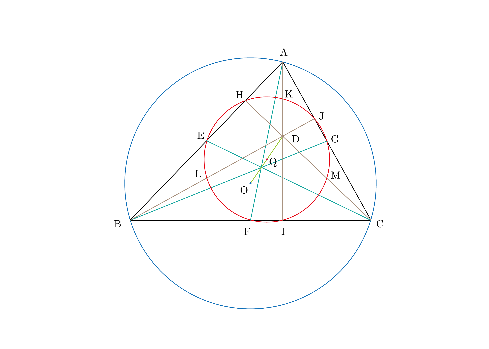

ブラックボックス 九点円定理の自動証明
The Nine-Point Circle Theorem

Given $\triangle{ABC}$, the nine points
- the midpoint of each side of triangle
- the foot of each altitude
- the midpoint of the line segment from each vertex of the triangle to the orthocenter
Asir's code
Input:
load("gr")$
load("noro_pd.rr")$
I1 = x1-x0$
I2 = y1-y0$
I3 = x2$
I4 = y2$
I5 = x3-1$
I6 = y3$
F1 = (x2-x4)*(x3-x1)+(y2-y4)*(y3-y1)$
F2 = (x3-x4)*(x1-x2)+(y3-y4)*(y1-y2)$
F3 = (x1-x4)*(x2-x3)+(y1-y4)*(y2-y3)$
F4 = (x1+x2)-2*x5$
F5 = (y1+y2)-2*y5$
F6 = (x2+x3)-2*x6$
F7 = (y2+y3)-2*y6$
F8 = (x3+x1)-2*x7$
F9 = (y3+y1)-2*y7$
F10 = (x3-x8)*(x1-x2)+(y3-y8)*(y1-y2)$
F11 = (x1-x2)*(y1-y8)-(x1-x8)*(y1-y2)$
F12 = (x1-x9)*(x2-x3)+(y1-y9)*(y2-y3)$
F13 = (x2-x3)*(y2-y9)-(x2-x9)*(y2-y3)$
F14 = (x2-x10)*(x3-x1)+(y2-y10)*(y3-y1)$
F15 = (x3-x1)*(y3-y10)-(x3-x10)*(y3-y1)$
F16 = (x1+x4)-2*x11$
F17 = (y1+y4)-2*y11$
F18 = (x2+x4)-2*x12$
F19 = (y2+y4)-2*y12$
F20 = (x3+x4)-2*x13$
F21 = (y3+y4)-2*y13$
F22 = (x14-x1)^2+(y14-y1)^2 - (x14-x2)^2-(y14-y2)^2$
F23 = (x14-x1)^2+(y14-y1)^2 - (x14-x3)^2-(y14-y3)^2$
F24 = x4+x14-2*x15$
F25 = y4+y14-2*y15$
Plist = [I1, I2, I3, I4, I5, I6, F1, F2, F3, F4, F5, F6, F7, F8, F9, F10, F11, F12, F13, F14, F15, F16, F17, F18, F19, F20, F21, F22, F23, F24, F25]$
Vlist = [x1, x2, x3, x4, x5, x6, x7, x8, x9, x10, x11, x12, x13, x14, x15, y1, y2, y3, y4, y5, y6, y7, y8, y9, y10, y11, y12, y13, y14, y15]$
G =nd_gr_trace(Plist1, Vlist1, 1, 1, 0)$
G1 = (x5-x15)^2 + (y5-y15)^2 - (x6-x15)^2 - (y6-y15)^2$
G2 = (x6-x15)^2 + (y6-y15)^2 - (x7-x15)^2 - (y7-y15)^2$
G3 = (x7-x15)^2 + (y7-y15)^2 - (x8-x15)^2 - (y8-y15)^2$
G4 = (x8-x15)^2 + (y8-y15)^2 - (x9-x15)^2 - (y9-y15)^2$
G5 = (x9-x15)^2 + (y9-y15)^2 - (x10-x15)^2 - (y10-y15)^2$
G6 = (x10-x15)^2 + (y10-y15)^2 - (x11-x15)^2 - (y11-y15)^2$
G7 = (x11-x15)^2 + (y11-y15)^2 - (x12-x15)^2 - (y12-y15)^2$
G8 = (x12-x15)^2 + (y12-y15)^2 - (x13-x15)^2 - (y13-y15)^2$
G9 = (x13-x15)^2 + (y13-y15)^2 - (x5-x15)^2 - (y5-y15)^2$
R1 = p_nf(G1, G, Vlist, 0);
R2 = p_nf(G2, G, Vlist, 0);
R3 = p_nf(G3, G, Vlist, 0);
R4 = p_nf(G4, G, Vlist, 0);
R5 = p_nf(G5, G, Vlist, 0);
R6 = p_nf(G6, G, Vlist, 0);
R7 = p_nf(G7, G, Vlist, 0);
R8 = p_nf(G8, G, Vlist, 0);
R9 = p_nf(G9, G, Vlist, 0);
Output:
0 [377] 0 [378] 0 [379] 0 [380] 0 [381] 0 [382] 0 [383] 0 [384] 0
Polynomial expression
Let
$$ \begin{eqnarray*} \begin{cases} A=(x_1, y_1)\\ B=(x_2, y_2)\\ C=(x_3, y_3).\\ D=(x_4, y_4) & (\rm{orthocenter})\\ E=(x_5, y_5)\\ F=(x_6, y_6).\\ G=(x_7, y_7)\\ H=(x_8, y_8)\\ I=(x_9, y_9).\\ J=(x_{10}, y_{10})\\ K=(x_{11}, y_{11})\\ L=(x_{12}, y_{12}).\\ M=(x_{13}, y_{13})\\ O=(x_{14}, y_{14}) & (\rm{circumcenter})\\ Q=(x_{15}, y_{15}) & (\rm{midpoint\ of\ }DO)\\ \end{cases} \end{eqnarray*} $$and it they can be given without loss of generality.
$$ \begin{eqnarray*} \begin{cases} A=(x_0, y_0)\\ B=(0, 0)\\ C=(1, 0)\\ \end{cases} \end{eqnarray*} $$The constraint conditions $\mathfrak{F}$ are
$$ \begin{eqnarray*} \begin{cases} \mathfrak{f}_1 = x_1-x_0 = 0 & (A = (x_0,y_0))\\ \mathfrak{f}_2 = y_1-y_0 = 0\\ \mathfrak{f}_3 = x_2 = 0 & (B = (0,0))\\ \mathfrak{f}_4 = y_2 = 0\\ \mathfrak{f}_5 = x_3-1 = 0 & (C = (1,0))\\ \mathfrak{f}_6 = y_3 = 0\\ f_1 = (x_2-x_4)(x_3-x_1)+(y_2-y_4)(y_3-y_1) = 0 & (BD \perp CA)\\ f_2 = (x_3-x_4)(x_1-x_2)+(y_3-y_4)(y_1-y_2) = 0 & (CD \perp AB)\\ f_3 = (x_1-x_4)(x_2-x_3)+(y_1-y_4)(y_2-y_3) = 0 & (AD \perp BC)\\ f_4 = (x_1+x_2)-2x_5 = 0 & (E\rm{\ is\ midpoint\ of\ }AB)\\ f_5 = (y_1+y_2)-2y_5 = 0 \\ f_6 = (x_2+x_3)-2x_6 = 0 & (F\rm{\ is\ midpoint\ of\ }BC)\\ f_7 = (y_2+y_3)-2y_6 = 0 \\ f_8 = (x_3+x_1)-2x_7 = 0 & (G\rm{\ is\ midpoint\ of\ }CA)\\ f_9 = (y_3+y_1)-2y_7 = 0 \\ f_{10} = (x_3-x_8)(x_1-x_2)+(y_3-y_8)(y_1-y_2) = 0 & (CH \perp AB)\\ f_{11} = (x_1-x_2)(y_1-y_8)-(x_1-x_8)(y_1-y_2) = 0 & (AH \rm{\ dependents\ on\ }AB)\\ f_{12} = (x_1-x_9)(x_2-x_3)+(y_1-y_9)(y_2-y_3) = 0 & (AI \perp BC)\\ f_{13} = (x_2-x_3)(y_2-y_9)-(x_2-x_9)(y_2-y_3) = 0 & (BI \rm{\ dependents\ on\ }BC)\\ f_{14} = (x_2-x_{10})(x_3-x_1)+(y_2-y_{10})(y_3-y_1) = 0 & (BJ \perp CA)\\ f_{15} = (x_3-x_1)(y_3-y_{10})-(x_3-x_{10})(y_3-y_1) = 0 & (CJ \rm{\ dependents\ on\ }CA)\\ f_{16} = (x_1+x_4)-2x_{11} = 0 & (K\rm{\ is\ midpoint\ of\ }AD)\\ f_{17} = (y_1+y_4)-2y_{11} = 0\\ f_{18} = (x_2+x_4)-2x_{12} = 0 & (L\rm{\ is\ midpoint\ of\ }BD)\\ f_{19} = (y_2+y_4)-2y_{12} = 0\\ f_{20} = (x_3+x_4)-2x_{13} = 0 & (M\rm{\ is\ midpoint\ of\ }CD)\\ f_{21} = (y_3+y_4)-2y_{13} = 0.\\ \end{cases} \end{eqnarray*} $$And the conclusions $\mathfrak{G}$ are
$$ \begin{eqnarray} \begin{cases} g_1 = (x_5-x_{15})^2 + (y_5-y_{15})^2 - (x_6-x_{15})^2 - (y_6-y_{15})^2 & (QE=QF)\\ g_2 = (x_6-x_{15})^2 + (y_6-y_{15})^2 - (x_7-x_{15})^2 - (y_7-y_{15})^2 & (QF=QG)\\ g_3 = (x_7-x_{15})^2 + (y_7-y_{15})^2 - (x_8-x_{15})^2 - (y_8-y_{15})^2 & (QG=QH)\\ g_4 = (x_8-x_{15})^2 + (y_8-y_{15})^2 - (x_9-x_{15})^2 - (y_9-y_{15})^2 & (QH=QI)\\ g_5 = (x_9-x_{15})^2 + (y_9-y_{15})^2 - (x_{10}-x_{15})^2 - (y_{10}-y_{15})^2 & (QI=QJ)\\ g_6 = (x_{10}-x_{15})^2 + (y_{10}-y_{15})^2 - (x_{11}-x_{15})^2 - (y_{11}-y_{15})^2 & (QJ=QK)\\ g_7 = (x_{11}-x_{15})^2 + (y_{11}-y_{15})^2 - (x_{12}-x_{15})^2 - (y_{12}-y_{15})^2 & (QK=QL)\\ g_8 = (x_{12}-x_{15})^2 + (y_{12}-y_{15})^2 - (x_{13}-x_{15})^2 - (y_{13}-y_{15})^2 & (QL=QM)\\ g_9 = (x_{13}-x_{15})^2 + (y_{13}-y_{15})^2 - (x_5-x_{15})^2 - (y_5-y_{15})^2. & (QM=QE)\\ \end{cases} \end{eqnarray} $$Proof
Let the ideal $I = \langle \mathfrak{F} \rangle$, there is a gröbner basis $\mathcal{G}$ for $I$, and it can be computed with Buchberger's algorithm.
$$ \begin{eqnarray*} \begin{split} I=\langle x_1-x_0,x_2,x_3-1,x_4-x_0,-2x_5+x_0,2x_6-1,-2x_7+x_0+1,-x_8y_0^2-x_0^2x_8+x_0^2,x_9-x_0, (-x_{10}+1)y_0^2+(-x_0^2+2x_0-1)x_{10},-x_{11}+x_0,2x_{12}-x_0,2x_{13}-x_0-1,2x_{14}-1, 4x_{15}-2x_0-1,y_1-y_0,y_2,y_3,-y_4y_0-x_0^2+x_0,-y_0+2y_5,-y_6,y_0-2y_7, -y_8y_0^2+x_0y_0-x_0^2y_8,y_9,-y_{10}y_0^2+(-x_0+1)y_0+(-x_0^2+2x_0-1)y_{10},-y_0^2+2y_{11}y_0+x_0^2-x_0, -2y_{12}y_0-x_0^2+x_0,-2y_{13}y_0-x_0^2+x_0,-y_0^2+2y_{14}y_0-x_0^2+x_0,y_0^2-4y_{15}y_0-x_0^2+x_0\rangle \end{split} \end{eqnarray*} $$Then, the multivariate division by $\mathcal{G}$ of the conclusions $\mathfrak{G}$ gives the remainder $0$.
Thus, $\mathfrak{G}$ is dependent on $\mathfrak{F}$. □